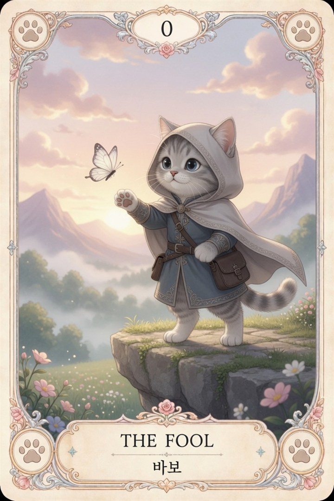
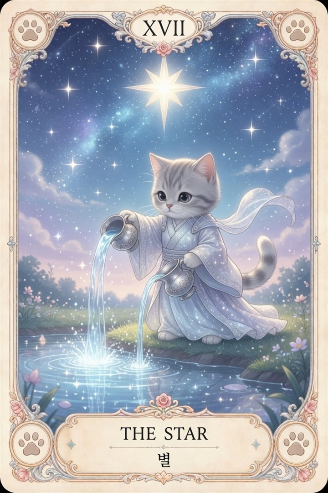
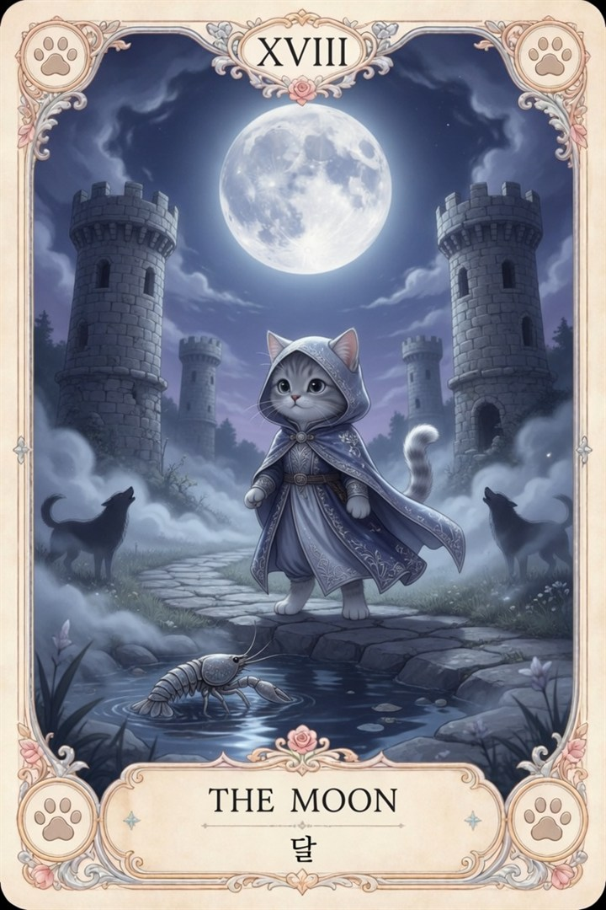

The art of walking
익숙한 명화에 일어난 작은 반전.
Images. Motion. Possibilities.
머릿속 장면이 움직이기 시작하는 곳.
영상과 이미지, 그리고 그 사이의 모든 실험.
작업의 기록
잠깐 스치는 표정부터
하나의 세계가 되는 장면까지.
직접 만들고, 다시 바라본 것들.
익숙한 명화에 일어난 작은 반전.
햇살과 바람 사이, 짧은 이탈리아 여행.



장면 너머의 소리
눈을 감아도, 장면은 계속된다.
한 편의 장면을 완성하는 리듬.
창작을 계속하기 위한 것들
영상을 자르고, 이미지를 다듬고,
다음 장면을 준비하는 작은 도구들.